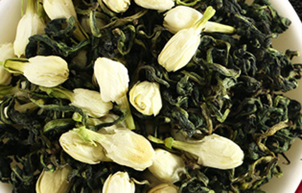
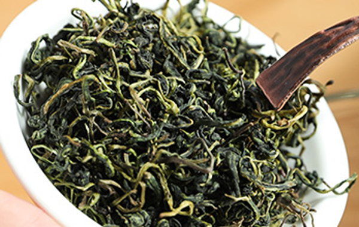

在大家心中蒲公英一直是一种常见的植物，但是它却有着非常高的药用价值，特别是对于乳腺增生的患者，坚持长期饮用蒲公英不仅可以治疗乳腺增生，还能预防乳腺疾病。关于蒲公英茶可以天天喝吗的问题，答案是不可以因为蒲公英有着大寒的特性，就是用来治疗乳腺疾病的女性也要在月经期间停止服用。
关于蒲公英茶可以天天喝吗，答案肯定是不行的，蒲公英有着苦寒的特性，长时间服用，会伤及脾胃，脾胃喜温，苦寒太过会引起腹泻、呕吐。
有的朋友是治疗乳腺增生及其他乳腺病必须服用蒲公英茶，蒲公英有着散结的功效，但是蒲公英寒性太大，乳腺增生不严重的日常服用最好配伍玫瑰一起饮用，用玫瑰缓解蒲公英的苦寒之性。乳腺疾病严重的必须大剂量长时间饮用的，再月经期间也要停止饮用，否则会导致月经寒瘀体内。

关于上火严重喝蒲公英的时候，要注意余火消立马停止服用蒲公英茶。或者少放一些蒲公英配伍菊花，肉桂，红枣煮茶长期服用养身保健。
1、脾胃虚寒者不宜喝
脾胃虚寒的患者不宜食用苦寒之物，会导致脾胃受凉痉挛，导致胃痉挛，还会引起脾胃中气不和导致恶心呕吐，和腹泻不止。
2、阴火旺盛者不宜喝
阴火旺盛是因为阳气虚弱导致阳不压阴，阴火旺盛，因为蒲公英是苦寒之物，这种情况下继续饮蒲公英茶会导致病情更加严重。
3、宫寒痛经者不宜喝

因为宫寒导致痛经的最好不要饮用蒲公英茶，蒲公英有着寒凉的特性，宫寒严重的饮用会导致月经不调，淤积、痛经加重。
4、血压低的患者不宜喝
蒲公英有着降低血压的作用，高血压的患者饮用可以降低血压，但是低血压的患者饮用就会导致，头晕、眼花、晕厥。
5、过敏体质者不宜喝
过敏体质者对自然界多种物质过敏，不能确定是否对蒲公英过敏之前最好不要服用，否则可能会引起全身荨麻疹、丘疹或者肠胃过敏导致的便血。
结语：通过上面的介绍大家都知道了蒲公英茶不能天天喝，以及蒲公英茶哪些人不宜喝，希望大家能够正确的饮用蒲公英茶来养身保健。